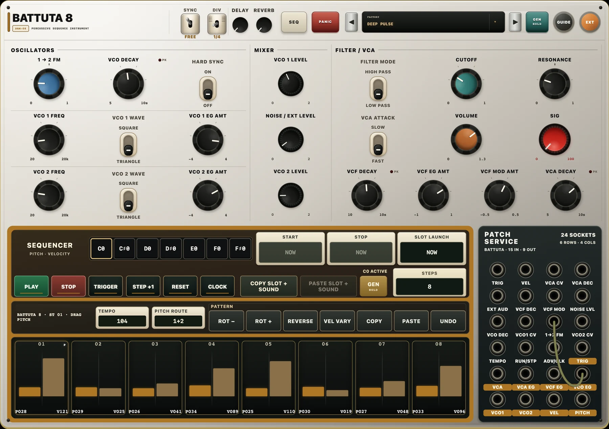
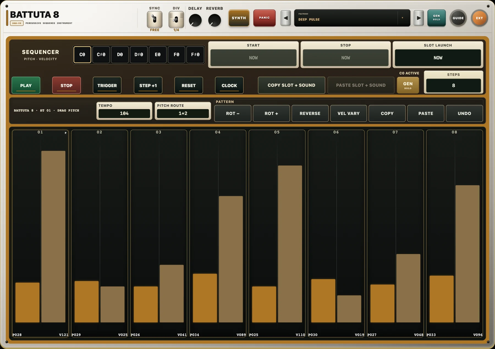
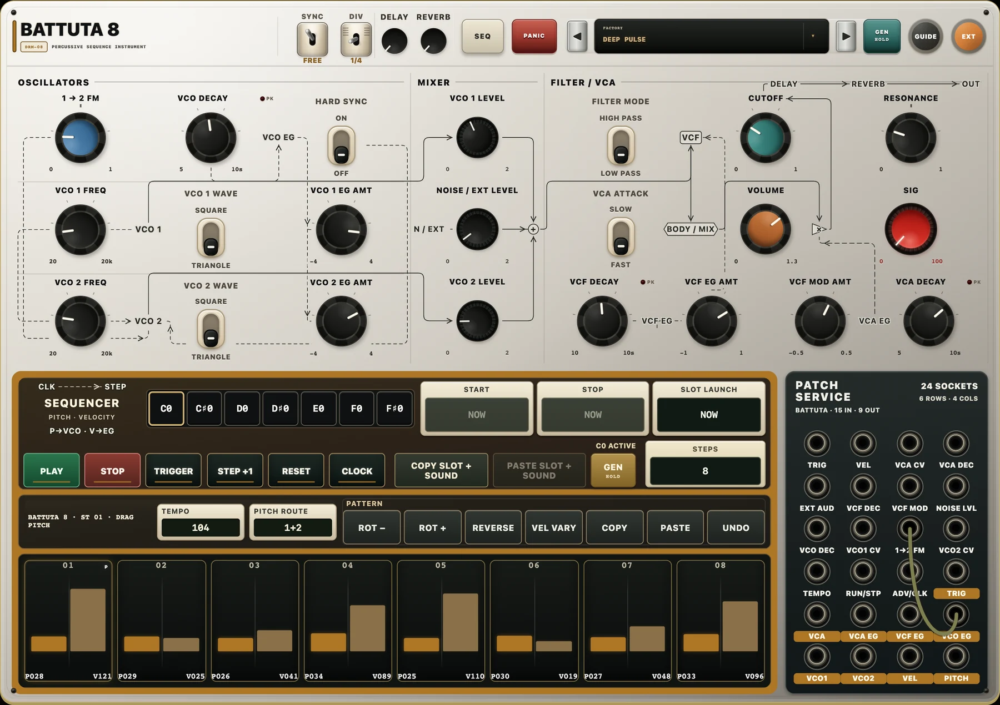

Semi-modular percussion · Manual
BATTUTA
Shape a hit from two oscillators and noise, then give it motion with the pitch and velocity sequencer.


EnlargeFirst hit
- Choose a preset
Open the preset display and load a Factory preset.
- Strike once
Tap TRIGGER to hear the sound and its envelope.
- Start a pattern
Press PLAY. Shorten VCA DECAY for a tighter hit.
Shape the hit
- VCO 1 · VCO 2 · Noise / EXT
- Mixer
- VCF
- VCA
- VCO EG AMT · VCO DECAY
- Set the size and speed of the pitch sweep at the beginning of each hit.
- VCF DECAY · VCA DECAY
- Shape how long the filter moves and how long the hit stays audible.
- HARD SYNC · 1 → 2 FM
- Use oscillator hard sync for a sharper edge or frequency modulation for metallic tones.
Sequence pitch and velocity


- PITCH · VELOCITY
- Drag either half of a step vertically. Drag across steps to draw a contour.
- STEPS · TEMPO
- Set the pattern length from 1 to 8. Tap TEMPO to enter a decimal BPM.
- PITCH ROUTE · VEL VARY
- Choose which oscillator follows pitch. Use VEL VARY to introduce variation in velocity.
Slots and generation
- Pattern COPY / PASTE
- Transfer pitch and velocity between patterns.
- COPY SLOT + SOUND
- Copy the scene, choose a destination slot, let it recall, then paste with PASTE SLOT + SOUND.
- GEN
- Use sequencer GEN for the active slot. The header GEN works on the whole instrument. Hold GEN for its options.
- User presets
- In the preset display, use SAVE AS to make a USER copy. Use SAVE to update the selected User preset.
Patch the signal


- EXT AUDIO → NOISE / EXT
- Bring in external audio through the noise channel and shape it with the filter and VCA.
- ADV / CLOCK
- Send trigger pulses here to advance the sequencer. Use TEMPO for rate control by CV.
- PITCH · VEL · TRIG
- Route sequencer and trigger signals from the patch outputs.
Clock and launch
- SYNC · DIV
- Use FREE for internal timing or HOST to follow your AUv3 host. DIV selects the beat division.
- START · STOP · SLOT LAUNCH
- Use NOW for immediate actions. Select a beat boundary to quantize the corresponding action.
- No sound?
- Try TRIGGER first. Check the mixer, VCA decay and any cables connected to the VCA or trigger inputs.